Lists, tuples and records
MnL has three containers, and they differ in exactly the way you would want them to: a list holds any number of items of one type, a tuple holds a fixed number of items of possibly different types, and a record is a tuple whose parts have names.
Lists, tuples and records take a variable number of inputs, so you add and remove members with the gear popup or the plus / minus buttons described under add / remove input.
The list
A list is a container holding a collection of items of the same type. It may be empty, or hold one or more items.
Empty list
To build an empty list, remove every member from the gear popup ⚙.
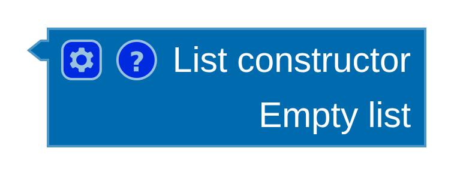
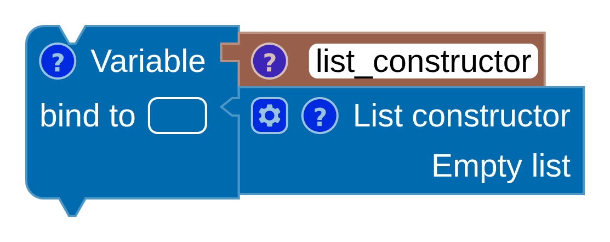
SML
[]
val list_constructor = []Scala
List ()
val list_constructor = List ()Non-empty list
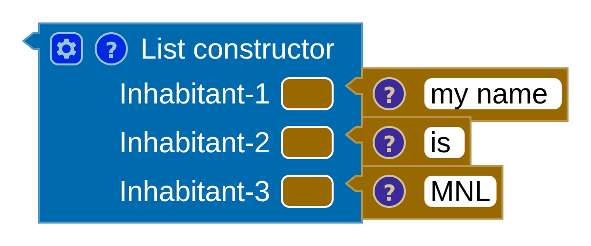
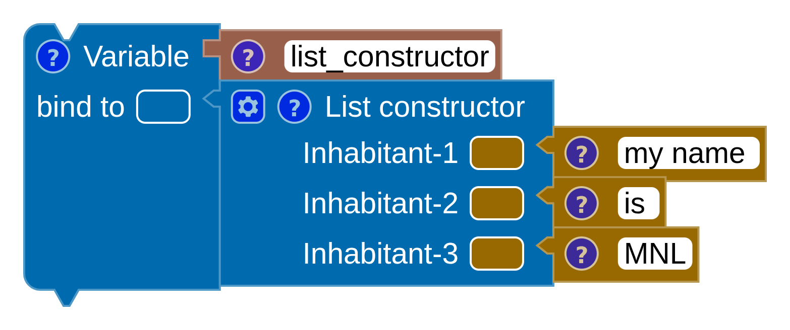
SML
["my name ", "is ", "MNL"]
val list_constructor = ["my name ", "is ", "MNL"]Scala
List ("my name ", "is ", "MNL")
val list_constructor = List ("my name ", "is ", "MNL")List operators
Four operators live in the :: List category.
Is empty
Returns true when the list is empty and false otherwise.
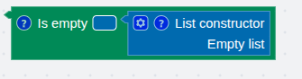
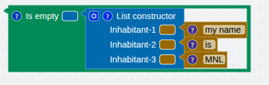
SML
null ([])Scala
List ().isEmptyHead
Retrieves the first inhabitant.
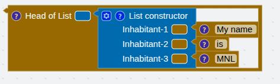
SML
hd (["My name ", "is ", "MNL"])Scala
List ("My name ", "is ", "MNL").headTail
Everything from the second inhabitant to the last.
SML
tl (["My name ", "is ", "MNL"])Scala
List ("My name ", "is ", "MNL").tailAppend
Inserts a new inhabitant at the front of the list.
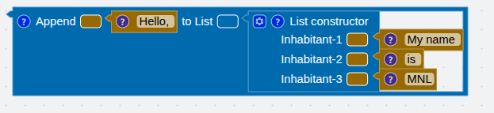
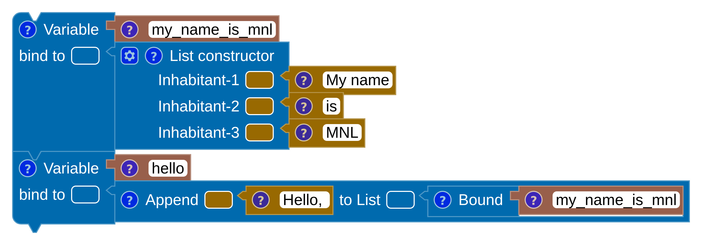
SML
("Hello, " :: ["My name ", "is ", "MNL"])
val my_name_is_mnl = ["My name", "is", "MNL"]
val hello = ("Hello, " :: my_name_is_mnl)Scala
("Hello, " :: List ("My name ", "is ", "MNL"))
val my_name_is_mnl = List ("My name", "is", "MNL")
val hello = ("Hello, " :: my_name_is_mnl)Example: sum a list
The three list operators together give you the standard recursive shape — test for empty, take the head, recurse on the tail.
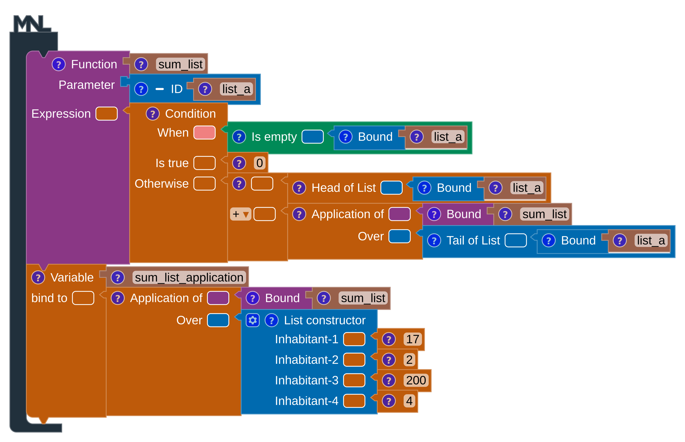
SML
fun sum_list (list_a) =
if null (list_a) then 0
else (hd (list_a) + sum_list (tl (list_a)))
val sum_list_application = sum_list ([17, 2, 200, 4])Scala
def sum_list (list_a : List[Float]) : Float =
if (list_a.isEmpty) then 0
else ((list_a.head) + sum_list ((list_a.tail)))
val sum_list_application = sum_list (List (17, 2, 200, 4))Examples › Basic › Sum list loads this program directly, and Examples › Lists has filter, fmap and fold built the same way.
The tuple
A tuple holds a collection of inhabitants whose types may be the same or different. Its size is fixed, and it cannot be empty.
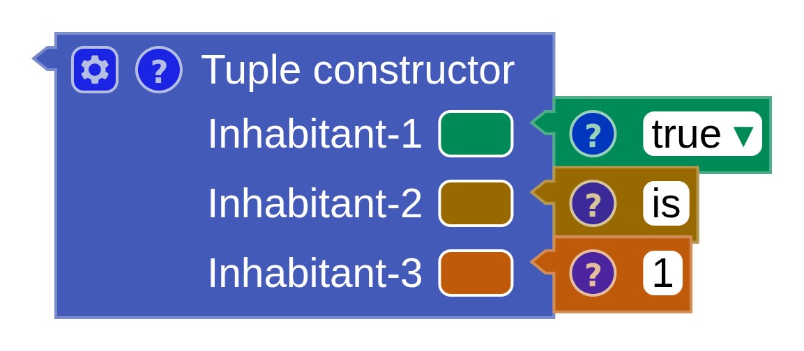
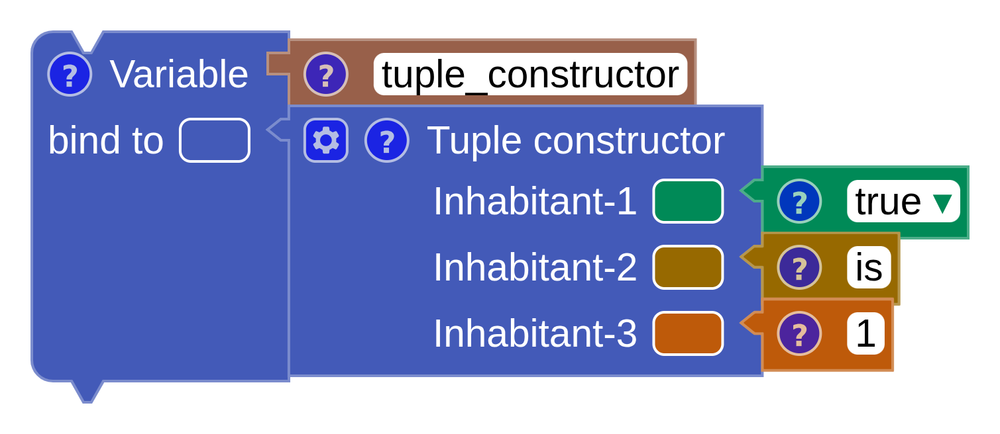
SML
(true, "is", 1)
val tuple_constructor = (true, "is", 1)Scala
(true, "is", 1)
val tuple_constructor = (true, "is", 1)Projection
Get item — the π operator — retrieves one element by position.
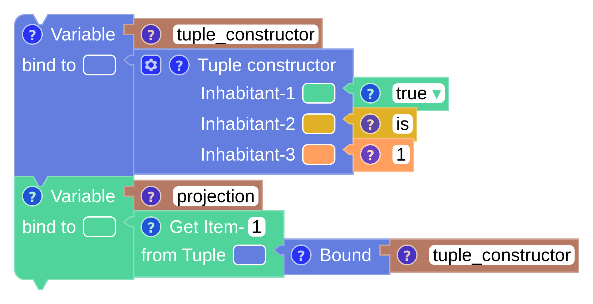
SML
val tuple_constructor = (true, "is", 1)
val projection = (#1 tuple_constructor)Scala
val tuple_constructor = (true, "is", 1)
val projection = (tuple_constructor(1))SML numbers tuple positions from 1 and Scala from 0, which is why the
two snippets above disagree. Read the position off the block label rather than assuming, and check
the result with block info.
The record
A record has a fixed number of fields, each pairing an identifier with an expression. Where a tuple names its parts implicitly by order, a record lets you name them.
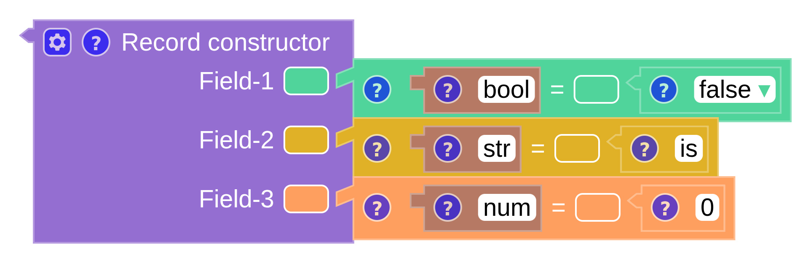
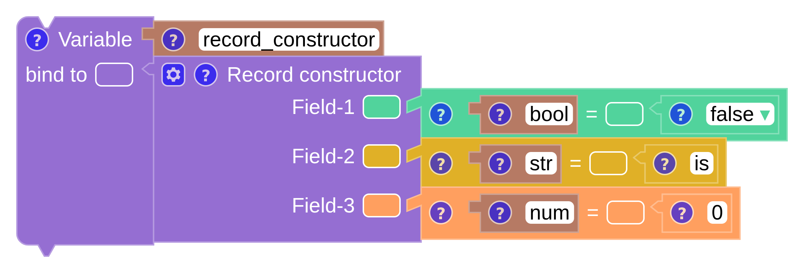
SML
{bool = false, str = "is", num = 0}
val record_constructor = {bool = false, str = "is", num = 0}Scala
/* Scala has no primitive Record type */Projection
Get field retrieves a field by name.
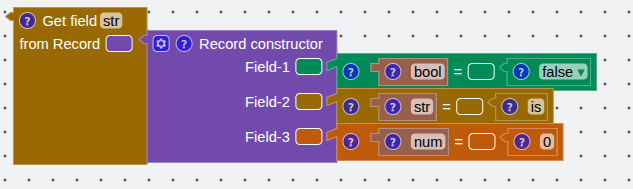
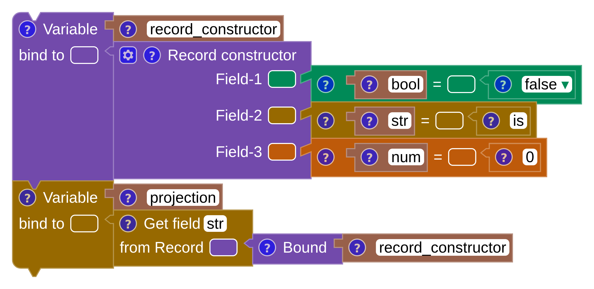
SML
(#str {bool = false, str = "is", num = 0})
val record_constructor = {bool = false, str = "is", num = 0}
val projection = (#str record_constructor)Scala
/* Scala has no primitive Record type */Records and tuples are also how you pass more than one value into a function — see two or more parameters.